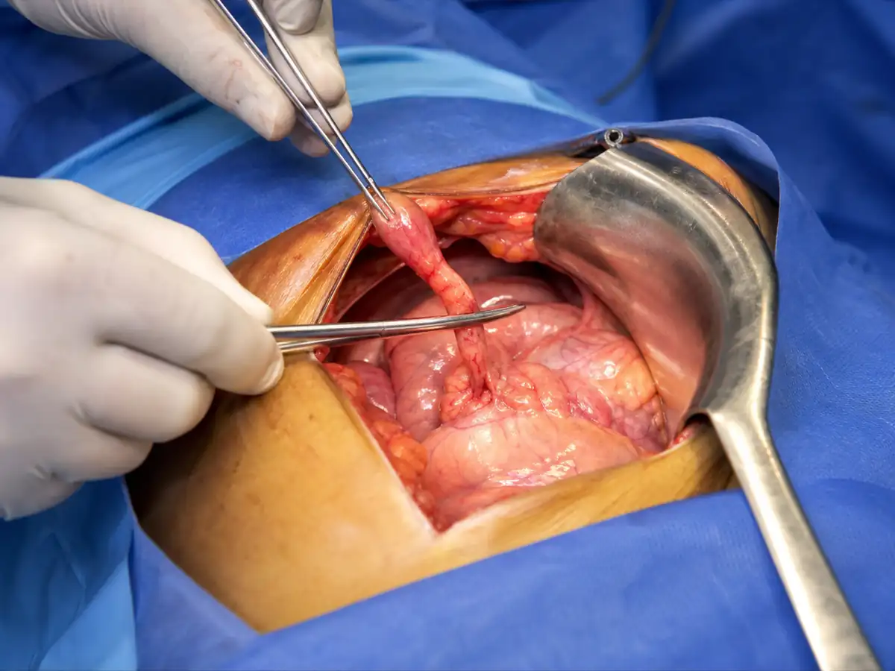

Ejemplo exclusivamente docente. No representa a un paciente real.

FOTOGRAFÍA INTRAOPERATORIA · CONTENIDO QUIRÚRGICOMarca Sí o No en cada criterio. No se requieren valores numéricos.
Ejemplo exclusivamente docente. No representa a un paciente real.
PAS: Samuel M. Pediatric appendicitis score. J Pediatr Surg. 2002;37:877–881. Estudio original en edades 4–15 años. PubMed ↗
Semáforo y ruta: Johns Hopkins All Children’s Hospital. Acute Appendicitis Clinical Pathway, actualización 27 abril 2026. Rangos 0–3 / 4–6 / ≥7. Protocolo ↗
México: GPC IMSS-031-08 «Diagnóstico de apendicitis aguda», referencia institucional histórica; vigencia actual no confirmada. Consultar ↗
Imagen: IDSA/PIDS 2024: ecografía abdominal como estudio inicial habitual en niños, según evaluación; la ecografía no concluyente requiere nueva valoración clínica. Recomendación ↗
Complemento: pARC (Kharbanda et al., Pediatrics 2018) mostró AUC 0.85 frente a 0.77 para PAS en la cohorte de validación. No transforma PAS en porcentaje. Estudio ↗
Los umbrales son específicos de la ruta Johns Hopkins; otros centros usan puntos de corte distintos. Se presenta como herramienta de apoyo y NO como decisión médica automática.